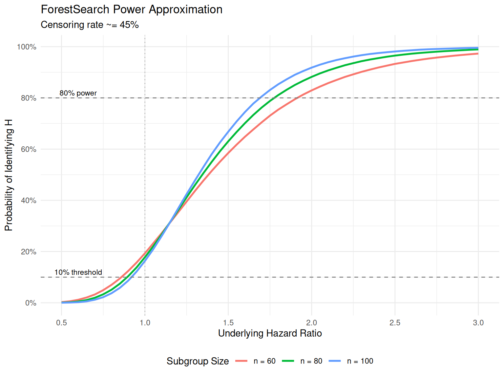

Methodology
Exploratory Subgroup Identification with Bootstrap Bias Correction
2026-10-31
Source:vignettes/articles/methodology.qmd
About this article (updated October 2026). This article describes the methodology of León, Jemielita, Guo, Marceau West and Anderson (2024), Statistics in Medicine, https://doi.org/10.1002/sim.10163, as the package first implemented it: the split-sample consistency screen evaluated by random half-splits, bootstrap bias correction, and GRF variable-importance screening of the candidate factors. The current package evaluates the consistency screen in closed form (
consistency_method = "resample", the default; random half-splitting is only the fallback, sofs.splitshas no effect otherwise), reports selection-adjusted estimates and one-sided bounds by multiplier resampling (mr_inference = TRUE; León and Anderson 2026a, arXiv:2609.38361), and calibrates the declaration of a subgroup at a protected level (León and Anderson 2026b, arXiv:2610.28379). The GRF variable-importance screen is removed as of 0.4.1 (vi.grf.minis deprecated and has no effect). The current methodology is documented invignette("forestsearch")and the post-selection article; the argument listings below are kept for the 2024 workflow and are not the complete current signature offorestsearch()— see?forestsearch. Where a statement below has been superseded, a 2026 note at that point says what the current method does and where it is documented.
1 Introduction
ForestSearch is a procedure for identifying subgroups with large treatment effects in clinical trials with survival endpoints, with particular focus on subgroups where treatment may be potentially detrimental. The approach is relatively simple and flexible, screening all possible subgroups based on hazard ratio thresholds indicative of harm with assessment according to the standard Cox model. By reversing the role of treatment, one can also seek to identify subgroups with substantial benefit.
This vignette provides a detailed summary of the methodology as described in Leon et al. (2024), “Exploratory subgroup identification in the heterogeneous Cox model: A relatively simple procedure”, published in Statistics in Medicine. Source code and replication materials are available at https://github.com/larry-leon/forestSearch.
1.1 Motivation
In oncology trials, subgroup analyses via forest plots are standard presentations in regulatory reviews and clinical publications. The goal is typically to evaluate the consistency of treatment effects across pre-specified subgroups relative to the intention-to-treat (ITT) population. The European Medicines Agency guideline on subgroups further describes scenarios where there is interest “to identify post-hoc a subgroup where efficacy and risk-benefit is convincing” or “in identifying a subgroup, where a relevant treatment effect and compelling evidence of a favorable risk-benefit profile can be assessed.”
However, there may be important subgroups based on patient characteristics that are not anticipated or well understood. ForestSearch addresses this need for exploratory subgroup identification with the following goals:
- Identify an underlying subgroup consisting of subjects who derive the least benefit (or potential harm) from treatment
- Estimate treatment effects within identified subgroups with appropriate bias correction
- Validate findings through cross-validation to assess stability
1.2 Key Features
- Split-sample consistency evaluation to identify subgroups “maximally consistent with harm”
- Bootstrap bias correction using infinitesimal jackknife variance estimation
- Variable selection via LASSO and/or Generalized Random Forests (GRF)
- Cross-validation for assessing algorithmic stability
- Reversibility: by switching the treatment indicator, the same framework can identify subgroups with substantial benefit
2 Statistical Framework
2.1 The Cox Model Setting
Consider the two-sample random censorship model with observations from a randomized clinical trial. Let denote the survival time, the censoring time, the treatment assignment, and a -dimensional collection of baseline covariates. We observe the possibly censored survival time with the event indicator. The observations for are assumed to be iid replicates.
ForestSearch is based on the standard Cox model fitted within candidate subgroups:
where is the baseline hazard and is the log-hazard ratio for treatment. This is the standard model used in oncology forest plot summaries—adjusted for treatment only.
2.2 Type-1 Error Framework
Heterogeneous treatment effects are assumed to be induced by the existence of a detrimental subgroup with true marginal hazard ratio , where the size of is at least 60 subjects with an underlying expected event count . Two type-1 error scenarios for false subgroup identification are defined:
- Scenario (i): A subgroup is identified where in truth (non-detrimental), even though heterogeneous effects may exist via a mixture of true and .
- Scenario (ii): The treatment effect is uniformly beneficial, , so no detrimental subgroup effects exist.
2026 note. Scenario (ii) — uniform benefit, no detrimental subgroup — is the event whose family-wise rate León and Anderson (2026b, Section 4) control: the probability that the search declares any subgroup when every candidate’s effect is at least a clinically specified benefit .
fs_declaration_calibration()reports that rate for the thresholds as executed and the calibrated cutoff that holds it at a nominal level;vignette("forestsearch")runs it on the GBSG analysis.
2.3 Marginal vs. Controlled Direct Effects
An important distinction in Forest Search is between marginal hazard ratios and controlled direct effects (CDEs) . For a data-generating model with hazard function:
the CDEs are and . As Aalen et al. (2015) describe, marginal effects for and can differ substantially from the CDEs. Forest Search targets marginal hazard ratios via the unadjusted Cox model, which is the standard approach in oncology forest plots.
2026 note. The post-selection papers take as their target the standard analysis of the selected region: , the treatment coefficient of the working model fitted within , and for the patients outside it — the model’s least-false value whether or not it is correctly specified, with the candidate family held fixed at what the data produced (León and Anderson 2026a, Section 1.2 and equation 15; 2026b, Section 1). It is a data-adaptive estimand, distinct from of a hypothetical true subgroup, and it is the quantity the multiplier-resampling interval covers (2026a, Theorem 2). Bias and coverage against both families of targets are reported in 2026a, Section 7 and Supplementary Section S8.
3 The ForestSearch Algorithm
The ForestSearch algorithm proceeds through four main steps:
3.1 Step 1: Construct Candidate Factors
For candidate baseline factors , , construct dummy indicators for each unique factor level.
Let denote the unique number of values with the number of possible single-factor subgroups.
Example: If denotes age cut at 50 years and denotes gender, then :
- age 50
- age 50
- gender = male
- gender = female
Let denote the resulting subgroup indicators. For example, for age cut at 50 years:
- indicates membership in the “50 and younger” subgroup
- indicates membership in the “older than 50” subgroup
Each and non-null combinations between them (e.g., “males 50 and younger”) represents a potential subgroup.
For continuous covariates, binary splits are generated via:
-
LASSO (Cox regularization via
glmnet): selects prognostic factors - GRF (causal survival forests): selects candidate factors and splits based on RMST heterogeneity
- Quartile cuts: splitting at the mean, median, , and
Any combination of the above can be used. Two standard configurations are:
- : LASSO only for candidate selection
- : LASSO + GRF for candidate selection
3.2 Step 2: Enumerate Candidate Subgroups
There are all-possible subgroup combinations. We restrict to those based on at most two factors. The total number of possible two-factor combinations is:
As a minimal sample size criterion, we further restrict to candidate subgroup combinations with:
- Minimum size of 60 subjects
- Minimum of 10 events in each treatment arm
Let denote the collection of subgroups meeting the sample size criteria where .
3.3 Step 3: Screening and Consistency Evaluation
3.3.1 3a. Hazard Ratio Screening
For subgroup (of size 60 and at least 20 events), estimate the Cox model log-hazard ratio , and consider the subgroup as a candidate if:
This corresponds to a hazard ratio threshold of 1.25, indicating potential harm.
3.3.2 3b. Split-Sample Consistency
To judge the “consistency with harm”:
- Randomly split the subgroup 50/50
- Estimate the log-hazard ratio in each of these 2 random splits
- Consider this subgroup to be “consistent with harm” if, for each random split, both splits have estimated log-hazard ratios
That is, for log-hazard ratio estimate pairs corresponding to each random split.
3.3.3 3c. Consistency Rate Estimation
Repeat many times (e.g., ) to estimate the consistency rate. Let denote pairs for the th random split for . The consistency rate is:
2026 note. The rate is now evaluated in closed form from one fit of the working model within the candidate: to first order the two half-sample estimates are a mirror pair about the full-sample fit, so , with
hr.consistencyand the robust (influence-function) standard error of (León and Anderson 2026b, Section 2.2; 2026a, Supplementary Section S3). Nothing is drawn:consistency_method = "resample"is the default and evaluates this expression, andfs.splitsis used only where the closed form is unavailable for a candidate (a non-convergent fit, or a GLM effect it cannot represent), when the literal split-and-refit calculation runs as the fallback. The screen is complementary-pairs stability selection applied to a smooth estimating-function coefficient, which is why its rate has a closed form; passing at level is the same as the one-sided robust lower confidence bound for clearing .
3.4 Step 4: Subgroup Selection
For subgroups with consistency rates at least 90%, choose the subgroup with the highest consistency rate as the estimated , denoted (“maximally consistent”).
If no subgroup achieves consistency 90%, then consider as null ().
For the complementary group, is estimated as the complement of , denoted . If is null, then is the ITT population.
3.5 Selection Criteria Variants
Step 4 can be modified in several ways:
sg_focus |
Description |
|---|---|
"hr" |
Maximize consistency rate (default) |
"maxSG" |
Select largest subgroup among those with consistency threshold |
"minSG" |
Select smallest subgroup among those with consistency threshold |
"hrMaxSG" |
Among consistent candidates, select largest with best HR |
"hrMinSG" |
Among consistent candidates, select smallest with best HR |
Table: ForestSearch subgroup selection criteria.
2026 note. The applications of León and Anderson (2026a, 2026b) use the largest admitted region within an effect band of the strongest effect —
sg_focus = "hrMaxSG"(alias"effMaxSG") withselection_rule = "neighborhood"andeffect_neighborhoodof 0.10 (2026a, Section 6) or 0.20 (2026b, Section 6.1) — and treat the rule as an operating-characteristic choice that moves the returned region along a frontier of size against effect, for which no optimality is claimed (2026b, Section 2.3). The package default remains"hr";?forestsearchlists the current spellings, including"maxeffCons"and"maxeff".
Additional constraints can include median survival thresholds for the experimental arm, control arm, or both.
4 Asymptotic Considerations
4.1 Power Approximation
We can approximate the probability of identifying subgroup via numerical integration. Let where and is the expected number of events in the subgroup.
The screening criterion is equivalent (approximately) to:
since by construction of the random splitting.
For a subgroup with underlying log-hazard ratio , we can approximate the probability of identifying via:
where independently, and denotes the normal density with mean and variance .
The following is based on Monte Carlo simulations. The package also contains a numerical integration implementation that is illustrated in the simulation vignette materials.

# Power approximation function
approx_power <- function(hr, n_subgroup, cens_rate = 0.45) {
beta <- log(hr)
d <- (1 - cens_rate) * n_subgroup
var_split <- 8 / d
# Numerical integration
integrate_2d <- function(beta, var) {
# Use Monte Carlo integration
set.seed(123)
n_sim <- 100000
w1 <- rnorm(n_sim, mean = beta, sd = sqrt(var))
w2 <- rnorm(n_sim, mean = beta, sd = sqrt(var))
mean((w1 + w2 >= 2 * log(1.25)) & (w1 >= 0) & (w2 >= 0))
}
integrate_2d(beta, var_split)
}
# Calculate power curves
hr_seq <- seq(0.5, 3.0, by = 0.05)
n_values <- c(60, 80, 100)
power_data <- expand.grid(hr = hr_seq, n = n_values)
power_data$power <- mapply(approx_power, power_data$hr, power_data$n)
power_data$n <- factor(power_data$n, labels = paste("n =", n_values))
library(ggplot2)
ggplot(power_data, aes(x = hr, y = power, color = n)) +
geom_line(linewidth = 1) +
geom_hline(yintercept = 0.10, linetype = "dashed", color = "gray50") +
geom_hline(yintercept = 0.80, linetype = "dashed", color = "gray50") +
geom_vline(xintercept = 1.0, linetype = "dotted", color = "gray70") +
scale_x_continuous(breaks = seq(0.5, 3.0, by = 0.5)) +
scale_y_continuous(breaks = seq(0, 1, by = 0.2), labels = scales::percent) +
labs(
x = "Underlying Hazard Ratio",
y = "Probability of Identifying H",
color = "Subgroup Size",
title = "ForestSearch Power Approximation",
subtitle = "Censoring rate ~= 45%"
) +
theme_minimal() +
theme(legend.position = "bottom") +
annotate("text", x = 0.6, y = 0.12, label = "10% threshold", size = 3) +
annotate("text", x = 0.6, y = 0.82, label = "80% power", size = 3)4.2 Threshold Selection Rationale
The choice of the 1.25 and 1.0 thresholds was based on the desire to control the rate for finding a subgroup to be approximately 10% when the underlying hazard ratio for is below 1.0.
If the underlying treatment effect is uniform and beneficial, then for a random subgroup , Cox model estimates will randomly fluctuate around the ITT effect. Because ForestSearch seeks subgroups with evidence for harm (via the screening and consistency thresholds), the chance of forming subgroups under the null with an estimated benefit randomly in favor of control is less likely the stronger the (uniform) ITT treatment effect.
Example: For , the approximation yields:
| Subgroup size | Type-1 error () | 80% power at |
|---|---|---|
| 4.9% | HR 1.94 | |
| 3.3% | HR 1.81 | |
| 2.2% | HR 1.73 |
Table: Type-1 error and approximate 80% power thresholds.
2026 note. This rationale is per candidate. León and Anderson (2026b, Section 4) treat the family-wise event — any candidate declared — through the law of the maximum of the standardized statistics over the enumerated family, which gives both the rate the executed thresholds imply under a uniform benefit (a diagnostic) and the cutoff that holds it at a nominal level;
fs_declaration_calibration()computes both. Their applications set the screening and consistency thresholds at a hazard ratio of one with (2026a, Section 6; 2026b, Section 6.1); the package defaults remain 1.25, 1.0 and 0.90.
5 Bootstrap Bias Correction
5.1 Sources of Bias
By the nature of the ForestSearch procedure, we expect unadjusted Cox model estimates based on to be upwardly biased due to the hazard ratio thresholds (since by construction, point estimates are for ).
However, the bias can also be pressured in the opposite direction depending on:
- The proportion of subjects incorrectly included in
- The value of relative to (e.g., a mixture of vs. )
5.2 Bias-Corrected Estimator
For bias correction, we proceed on the Cox regression coefficient scale, denoted , and then exponentiate to obtain point estimates and confidence intervals for hazard ratios .
Our bias-corrected estimator takes into account two sources of bias involving the discrepancies between the bootstrapped and observed data Cox estimators. The approach is along the lines of Harrell et al. (1996), but additionally incorporates the bias term .
5.2.1 Notation
For the observed data with estimated subgroup :
- : Estimated Cox model regression parameter
For bootstrap samples with estimated subgroup :
- : Cox model parameter for bootstrap sample based on bootstrap-estimated subgroup
- : Cox model parameter for observed data based on bootstrap-estimated subgroup
- : Cox model parameter for bootstrap sample based on observed subgroup
5.2.2 Bias Terms
Define the bias terms:
5.2.3 Bias-Corrected Estimators
The bias-corrected estimators are defined as:
Similarly for the complement:
The bootstrap resamples are drawn independently with replacement from the observed data . The full ForestSearch algorithm (including LASSO and/or GRF candidate selection) is mimicked in each bootstrap replicate. In general, the variance induced by the (well-defined) candidate selection algorithm is incorporated by mimicking the algorithm in the bootstrap process.
5.3 Infinitesimal Jackknife Variance Estimation
To estimate the variance, we apply an infinitesimal jackknife approximation, viewing the bias-corrected estimators as “bagged estimators.”
Let denote bootstrap sample . Let denote the number of times observation is drawn for the th bootstrap sample, and let .
The infinitesimal jackknife variance estimate is:
where:
The bias-corrected variance is:
where:
Confidence intervals for hazard ratios are based on standard normal approximations (exponentiated): .
2026 note. Multiplier resampling (
mr_inference = TRUE), the post-selection inference of León and Anderson (2026a), reproduces this correction to first order on the enumerated family without refitting: one shared multiplier draw perturbs every candidate’s effect through its influence values, the selection rule is re-applied to the perturbed effects, and the two-term de-biased estimate and the infinitesimal-jackknife variance above are read from a single matrix product (2026a, Sections 2.5 and 3; Theorem 1). It runs in seconds where the bootstrap runs in minutes (2026a, Section 6). The full bootstrap remains available asforestsearch_bootstrap_dofuture()and is the reference on a fixed family; on a model-generated family (GRF, DINA) the two answer different questions (2026a, Section 5). The one-sided field bounds and the two-subgroup claim are built from the same influence matrix and multiplier draws (2026b, Section 3); the post-selection article sets the bootstrap and the multiplier correction side by side on the GBSG data.
6 Cross-Validation
Cross-validation is used for evaluating the quality and stability of the selection algorithm. Two forms are implemented.
2026 note. The current diagnostics of selection stability come from the multiplier draws themselves: the re-selection frequency , the share of draws on which the observed region wins again, and the membership recovery of the field (
field_recovery = TRUE), read as flags rather than instruments in the post-selection article. The cross-validation below is the 2024 workflow’s and remains available.
6.1 N-Fold (Leave-One-Out) Cross-Validation
For N-fold CV, we exclude each subject () from the analysis and predict their (or ) classification based on the remaining subjects.
Let denote the th subject’s predicted classification based on the FS procedure without the subject in the analysis. Similarly, is the FS classification based on the full sample analysis. Form:
Cox model analyses based on subgroups correspond to estimates that are unadjusted for the selection algorithm, whereas represents an out-of-bag (OOB) classification where each subject is not included in the selection algorithm from which they are classified.
Interpretation:
- Correspondence between and subgroup analysis results may be anticipated, especially for large
- If and are identical, there is no diagnostic value; in contrast, substantial lack of correspondence may suggest underlying instability
6.2 K-Fold Cross-Validation
In K-fold CV (e.g., 10-fold):
- Randomly partition the data into K folds
- For each fold (leaving these subjects out), select based on the other K-1 folds
- Predict the classification for the left-out fold
Since this process depends on the random partition, repeat 50–200 times and summarize correspondence measures across the partitions.
6.3 CV Metrics
The sensitivity and positive predictive value metrics are modified by replacing with and the true with :
| Metric | Description | Interpretation |
|---|---|---|
| sensCV(Ĥ) | Proportion of full-analysis Ĥ subjects also classified as Ĥ in CV | Higher = more stable Ĥ identification |
| sensCV(Ĥᶜ) | Proportion of full-analysis Ĥᶜ subjects also classified as Ĥᶜ in CV | Higher = more stable Ĥᶜ identification |
| ppvCV(Ĥ) | Proportion of CV Ĥ subjects that match full-analysis Ĥ | Higher = CV predictions align with full analysis |
| ppvCV(Ĥᶜ) | Proportion of CV Ĥᶜ subjects that match full-analysis Ĥᶜ | Higher = CV predictions align with full analysis |
| Exact Match | Proportion of CV folds reproducing exact subgroup definition | Higher = algorithm consistently identifies same subgroup |
cv_metrics <- data.frame(
Metric = c("sensCV(Ĥ)", "sensCV(Ĥᶜ)", "ppvCV(Ĥ)",
"ppvCV(Ĥᶜ)", "Exact Match"),
Description = c(
"Proportion of full-analysis Ĥ subjects also classified as Ĥ in CV",
"Proportion of full-analysis Ĥᶜ subjects also classified as Ĥᶜ in CV",
"Proportion of CV Ĥ subjects that match full-analysis Ĥ",
"Proportion of CV Ĥᶜ subjects that match full-analysis Ĥᶜ",
"Proportion of CV folds reproducing exact subgroup definition"
),
Interpretation = c(
"Higher = more stable Ĥ identification",
"Higher = more stable Ĥᶜ identification",
"Higher = CV predictions align with full analysis",
"Higher = CV predictions align with full analysis",
"Higher = algorithm consistently identifies same subgroup"
)
)
knitr::kable(cv_metrics, caption = "Cross-Validation Metrics for ForestSearch")7 Simulation Study
7.1 Data-Generating Model
The simulation setting is based on the German Breast Cancer Study Group (GBSG) trial covariate structure. A “super-population” of 5,000 subjects was constructed by resampling from the observed GBSG data while retaining covariate structure. Survival outcomes were generated from a Weibull regression model:
where follows the standard extreme value distribution, is a dispersion parameter, , and the interaction defines the true subgroup . Parameters , , and were based on Weibull model fits to the observed GBSG data; and were chosen to generate target marginal hazard ratio effects. A covariate-dependent censoring distribution was generated analogously with an overall censoring rate of approximately 46%.
7.2 Scenarios
Three models were evaluated across 20,000 simulations:
| Model | Condition | N | p_H (%) | θ†(ITT) | θ†(H) | θ†(Hc) |
|---|---|---|---|---|---|---|
| M1 | Null | 700 | - | 0.70 | - | - |
| M1 | Alt | 700 | 13% | 0.71 | 2.0 | 0.65 |
| M2 | Null | 500 | - | 0.69 | - | - |
| M2 | Alt | 500 | 20% | 0.79 | 2.0 | 0.69 |
| M3 | Null | 300 | - | 0.55 | - | - |
| M3 | Alt | 300 | 30% | 0.74 | 2.0 | 0.56 |
sim_models <- data.frame(
Model = c("M1", "M1", "M2", "M2", "M3", "M3"),
Condition = c("Null", "Alt", "Null", "Alt", "Null", "Alt"),
N = c(700, 700, 500, 500, 300, 300),
`p_H` = c("-", "13%", "-", "20%", "-", "30%"),
`theta_ITT` = c(0.70, 0.71, 0.69, 0.79, 0.55, 0.74),
`theta_H` = c("-", "2.0", "-", "2.0", "-", "2.0"),
`theta_Hc` = c("-", "0.65", "-", "0.69", "-", "0.56"),
check.names = FALSE
)
knitr::kable(
sim_models,
col.names = c("Model", "Condition", "N", "p_H (%)",
"θ†(ITT)", "θ†(H)", "θ†(Hc)"),
caption = "Simulation model specifications.",
align = "ccccccc"
)Each model was evaluated with and without additional random noise factors ( variables completely unrelated to the outcome): 3 noise factors for , and 5 noise factors for and .
7.3 Comparator Methods
ForestSearch was compared against:
- GRF / GRF.60: Generalized random forests targeting RMST, with GRF.60 using a truncated horizon for stability. Requires 6-month RMST benefit for control.
- VT(24) / VT(36): Virtual twins targeting survival rate differences at 24 or 36 months. Requires in favor of control.
All methods were restricted to subgroups with 60 subjects and maximum tree depth of 2. Classification accuracy is measured by sensitivity and positive predictive value:
7.4 Key Results: Subgroup Identification
| Method | T1E | Power | sens(Ĥ) | T1E | Power | sens(Ĥ) |
|---|---|---|---|---|---|---|
| FS_l | 2% | 71% | 64% | 3% | 89% | 77% |
| FS_lg | 11% | 83% | 74% | 14% | 96% | 81% |
| GRF | 61% | 94% | 66% | 60% | 99% | 70% |
| GRF.60 | 27% | 71% | 52% | 32% | 86% | 58% |
| VT(24) | 4% | 44% | 37% | 4% | 56% | 44% |
| VT(36) | 6% | 42% | 34% | 6% | 53% | 40% |
results <- data.frame(
Method = c("FS_l", "FS_lg", "GRF", "GRF.60", "VT(24)", "VT(36)"),
`T1E_M1` = c("2%", "11%", "61%", "27%", "4%", "6%"),
`Pow_M1` = c("71%", "83%", "94%", "71%", "44%", "42%"),
`Sens_M1` = c("64%", "74%", "66%", "52%", "37%", "34%"),
`T1E_M2` = c("3%", "14%", "60%", "32%", "4%", "6%"),
`Pow_M2` = c("89%", "96%", "99%", "86%", "56%", "53%"),
`Sens_M2` = c("77%", "81%", "70%", "58%", "44%", "40%"),
check.names = FALSE
)
knitr::kable(
results,
col.names = c("Method", "T1E", "Power", "sens(Ĥ)",
"T1E", "Power", "sens(Ĥ)"),
caption = paste(
"Subgroup identification results with noise factors.",
"T1E = type-1 error (any(H) under null); Power = any(H) under",
"alternative; sens(H-hat) = sensitivity for H classification",
"under alternative."
),
align = "lcccccc"
)Summary of identification results:
- maintained type-1 error across all scenarios, including with noise factors, and was the most stable approach
- had slightly elevated type-1 error (up to 14% with noise, inherited from GRF) but achieved the highest classification accuracy among approaches with well-controlled type-1 error
- GRF had substantially inflated type-1 error (up to 61% with noise) under and ; intuitively, with the addition of noise factors there was more opportunity to randomly form erroneous splits
- Under (strongest ITT effect, ), all approaches had better-controlled type-1 error since the chance of forming subgroups with estimates in favor of control is less likely with a more pronounced ITT treatment effect
- The power approximation from Equation 1 was reasonably accurate across all models
7.5 Key Results: Estimation Properties
Estimation properties for with bootstrap replicates (based on 1,000 simulations per model with noise factors):
| Estimator | Rel. bias (marginal) | Rel. bias (CDE) | Oracle coverage |
|---|---|---|---|
| θ̂(Ĥ) observed | 9% to 24% | 9% to 14% | >= 98% |
| θ̂*(Ĥ) bias-corrected | -10% to -2.4% | -11.6% to -6.3% | >= 95% |
| θ̂(Ĥᶜ) observed | 0.5% to 5.1% | -9.7% to 2.8% | >= 99% |
| θ̂*(Ĥᶜ) bias-corrected | 2.3% to 10.9% | -4.8% to 4.6% | >= 100% |
est_results <- data.frame(
Estimator = c(
"θ̂(Ĥ) observed",
"θ̂*(Ĥ) bias-corrected",
"θ̂(Ĥᶜ) observed",
"θ̂*(Ĥᶜ) bias-corrected"
),
`Bias_dagger` = c("9% to 24%", "-10% to -2.4%",
"0.5% to 5.1%", "2.3% to 10.9%"),
`Bias_ddagger` = c("9% to 14%", "-11.6% to -6.3%",
"-9.7% to 2.8%", "-4.8% to 4.6%"),
`Coverage_oracle` = c(">= 98%", ">= 95%", ">= 99%", ">= 100%"),
check.names = FALSE
)
knitr::kable(
est_results,
col.names = c("Estimator", "Rel. bias (marginal)",
"Rel. bias (CDE)", "Oracle coverage"),
caption = paste(
"Estimation properties for FS_lg across models M1-M3.",
"Relative bias ranges shown across the three models.",
"Oracle coverage = CI coverage for the oracle (true subgroup) estimate."
),
align = "lccc"
)The bias-corrected estimators tend to be conservative: underestimating both and (“conservative for harm”) while overestimating both and (“conservative for benefit”). Coverage rates for were for each target, and the oracle coverage rates for both estimators were .
2026 note. The operating characteristics of the current inference — the multiplier-resampling correction, the one-sided field and field-s bounds and the Bonferroni pair, scored against and against the planted targets — are in León and Anderson (2026b, Section 5 and Supplementary Section S2) and (2026a, Section 7 and Supplementary Section S8). Those studies run the fully enumerated search under their own designs and thresholds — 2026b at the conventional thresholds with 2,000 replicates per cell and no strict-null cell (Section 5.1); 2026a at deliberately permissive thresholds, and , to stress false identification (Supplementary Section S8) — so their numbers are not comparable with the table above.
8 Applications
8.1 GBSG Breast Cancer Trial
The German Breast Cancer Study Group trial () compared tamoxifen (hormonal therapy) to chemotherapy for tumor recurrence. The observed censoring rate was approximately 56%, and the Cox ITT hazard ratio estimate was 0.69 (95% CI: 0.54, 0.89). Seven baseline prognostic factors were available.
ForestSearch results: Using the selection criterion for the largest subgroup with consistency 90%, with LASSO followed by quartile cuts on continuous factors, and GRF () for additional candidate selection:
- = Estrogen = 0 (consistency rate 95.1%)
- (0.86, 2.9) — 82 subjects (12%)
- (0.44, 0.93) — 604 subjects (88%)
The bias-corrected estimate for suggests a slightly stronger benefit (0.64 vs 0.69 for ITT) that is statistically significant.
2026 note. The same trial analysed with the current method is Table 1 of León and Anderson (2026b), run end to end in
vignette("forestsearch"): forest search returns (75 patients), with a corrected hazard ratio of 1.276 and a one-sided 95% field lower bound of 0.634; the complement’s corrected hazard ratio is 0.645 with a field-s upper bound of 0.804. Each is read by its location against the trial’s own effect of 0.695 and against clinically meaningful effect sizes, not as a test at a hazard ratio of one.
Cross-validation: N-fold CV showed perfect stability (all 686 training sets reproduced Estrogen = 0). Across 200 random 10-fold CV analyses, the median number of folds identifying a subgroup was 9/10, with and .
Biological plausibility: Tamoxifen is a selective estrogen receptor (ER) modulator with limited efficacy in ER-negative tumors. A patient-level meta-analysis by the Early Breast Cancer Trialists’ Collaborative Group found for ER-negative (ER = 0) subjects, the event-rate ratio was 1.11 (SE = 0.13); whereas for ER-positive () subjects it was 0.62 (SE = 0.03).
8.2 ACTG-175 HIV Trial
The ACTG-175 study () compared zidovudine + didanosine (experimental) to didanosine monotherapy (control). The survival outcome was the first occurrence of CD4 decline 50, AIDS progression, or death. The Cox ITT hazard ratio estimate was 0.84 (0.65, 1.09), with 15 baseline covariates available.
Goal: Identify a subgroup with substantial benefit by reversing treatment roles (screening threshold , consistency threshold ), selecting the largest subgroup with consistency 90%.
ForestSearch results:
- = Preanti 744.5 and Age 34 (consistency 92.8%)
- (0.37, 0.94) — 382 subjects (35%)
- (0.65, 1.41) — 701 subjects (65%)
The bias-corrected estimate suggests a relatively strong benefit (0.59 vs 0.84 for ITT) that is statistically significant.
2026 note. The 2026 papers analyse ACTG 175 on its binary and continuous endpoints in the harm orientation — the odds ratio of no CD4 improvement (2026a, Supplementary Section S7 and Table S3; 2026b, Supplementary Section S3.4) and the mean difference in CD4 change (2026b, Supplementary Section S3.4) — not the time-to-event benefit search above, which has no counterpart there.
Cross-validation: N-fold CV reproduced the full analysis subgroup definition in all but 7 of 1,083 training sets. The N-fold predicted Cox estimate was 0.59 (0.37, 0.94), identical to the bootstrap bias-corrected estimate. Across 200 random 10-fold analyses, median 9/10 folds identified a subgroup with .
Biological plausibility: The finding aligns with the HIV Trialists’ Collaborative Group meta-analysis reporting greater treatment effects among participants with no previous antiretroviral therapy or higher baseline CD4 counts. Of the subgroup, 46.9% were antiretroviral treatment naive.
9 Variable Selection Methods
9.1 LASSO
LASSO (Least Absolute Shrinkage and Selection Operator) is used for Cox model covariate (prognostic) selection via glmnet. In simulations, LASSO helps mitigate false discovery when analyses include baseline factors that are completely random noise.
# forestsearch() arguments of the 2024 workflow with their defaults; not the complete current signature (see ?forestsearch).
# LASSO and GRF are both off by default (use_lasso = FALSE, use_grf = FALSE);
# this snippet switches LASSO on (use_lasso = TRUE) and leaves GRF off.
result <- forestsearch(
df.analysis = data, # required
# ─── Variable names ─────────────────────────────────────────────────────
outcome.name = "tte", # default "tte"
event.name = "event", # default "event"
treat.name = "treat", # default "treat"
id.name = "id", # default "id"
potentialOutcome.name = NULL, # default NULL
flag_harm.name = NULL, # default NULL
confounders.name = NULL, # default NULL
# ─── Parallel processing ────────────────────────────────────────────────
parallel_args = list(plan = "multisession",
workers = 6,
show_message = TRUE), # default plan="multisession"
# ─── Prediction / RCT flag ──────────────────────────────────────────────
df.predict = NULL, # default NULL
df.test = NULL, # default NULL
is.RCT = TRUE, # default TRUE
seedit = 8316951, # default 8316951
est.scale = "hr", # default "hr"
# ─── Factor selection: LASSO + GRF ──────────────────────────────────────
use_lasso = TRUE, # default FALSE <-- FOCAL
use_grf = FALSE, # default FALSE <-- FOCAL
grf_res = NULL, # default NULL
grf_cuts = NULL, # default NULL
grf_depth = 2, # default 2
dmin.grf = 0.0, # default 0.0
frac.tau = 0.8, # default 0.8
return_selected_cuts_only = TRUE, # default TRUE
tune_grf = FALSE, # default FALSE
# ─── Cuts / discretization ──────────────────────────────────────────────
conf_force = NULL, # default NULL
defaultcut_names = NULL, # default NULL
cut_type = "default", # default "default"
exclude_cuts = NULL, # default NULL
replace_med_grf = FALSE, # default FALSE
cont.cutoff = 4, # default 4
conf.cont_medians = NULL, # default NULL
conf.cont_medians_force = NULL, # default NULL
conf.cont_jcuts = NULL, # default NULL
# ─── Subgroup constraints ───────────────────────────────────────────────
n.min = 60, # default 60
d0.min = 10, # default 10
d1.min = 10, # default 10
maxk = 2, # default 2
max_subgroups_search = 10, # default Inf
# ─── Thresholds ─────────────────────────────────────────────────────────
effect.threshold = NULL, # default NULL
consistency.threshold = NULL, # default NULL
hr.threshold = 1.25, # default 1.25
hr.consistency = 1.0, # default 1.0
# ─── Selection (sg_focus / Pareto neighborhood) ─────────────────────────
sg_focus = "hr", # default "hr"
selection_rule = "neighborhood", # default "neighborhood"
effect_neighborhood = 0.10, # default 0.10
# ─── Consistency evaluation ─────────────────────────────────────────────
fs.splits = 1000, # default 1000
m1.threshold = Inf, # default Inf
pconsistency.threshold = 0.90, # default 0.90
stop_threshold = 0.95, # default pconsistency.threshold
# ─── Two-stage consistency ──────────────────────────────────────────────
use_twostage = TRUE, # default TRUE
twostage_args = list(), # default list()
# ─── GLM outcome support ────────────────────────────────────────────────
outcome_type = "survival", # default "survival" (match.arg)
effect_measure = NULL, # default NULL
offset.name = NULL, # default NULL
adverse_outcome = NULL, # default NULL
overdispersion = "none", # default "none" (match.arg)
grf_count_transform = "log", # default "log" (match.arg)
# ─── Propensity-score adjustment ────────────────────────────────────────
ps_method = NULL, # default NULL
ps_adjust_method = "none", # default "none" (match.arg)
ps_hat = NULL, # default NULL
# ─── Output / diagnostics ───────────────────────────────────────────────
show_candidate_summary = FALSE, # default FALSE
minp = 0.025, # default 0.025
details = FALSE, # default FALSE
quiet = FALSE, # default FALSE
by.risk = 12, # default 12
plot.sg = FALSE, # default FALSE
plot.grf = FALSE # default FALSE
)9.2 Generalized Random Forests (GRF)
GRF targets RMST (Restricted Mean Survival Time) via causal survival forests and can be used as a complementary variable selection method. In ForestSearch, GRF is used for identifying candidate factors (binary splits) rather than as the primary identification procedure.
# forestsearch() arguments of the 2024 workflow with their defaults; not the complete current signature (see ?forestsearch).
# LASSO and GRF are both off by default (use_lasso = FALSE, use_grf = FALSE);
# this snippet switches both on (use_lasso = TRUE, use_grf = TRUE).
result <- forestsearch(
df.analysis = data, # required
# ─── Variable names ─────────────────────────────────────────────────────
outcome.name = "tte", # default "tte"
event.name = "event", # default "event"
treat.name = "treat", # default "treat"
id.name = "id", # default "id"
potentialOutcome.name = NULL, # default NULL
flag_harm.name = NULL, # default NULL
confounders.name = NULL, # default NULL
# ─── Parallel processing ────────────────────────────────────────────────
parallel_args = list(plan = "multisession",
workers = 6,
show_message = TRUE), # default plan="multisession"
# ─── Prediction / RCT flag ──────────────────────────────────────────────
df.predict = NULL, # default NULL
df.test = NULL, # default NULL
is.RCT = TRUE, # default TRUE
seedit = 8316951, # default 8316951
est.scale = "hr", # default "hr"
# ─── Factor selection: LASSO + GRF ──────────────────────────────────────
use_lasso = TRUE, # default FALSE <-- FOCAL
use_grf = TRUE, # default FALSE <-- FOCAL
grf_res = NULL, # default NULL
grf_cuts = NULL, # default NULL
grf_depth = 2, # default 2
dmin.grf = 0.0, # default 0.0
frac.tau = 0.8, # default 0.8
return_selected_cuts_only = TRUE, # default TRUE
tune_grf = FALSE, # default FALSE
# ─── Cuts / discretization ──────────────────────────────────────────────
conf_force = NULL, # default NULL
defaultcut_names = NULL, # default NULL
cut_type = "default", # default "default"
exclude_cuts = NULL, # default NULL
replace_med_grf = FALSE, # default FALSE
cont.cutoff = 4, # default 4
conf.cont_medians = NULL, # default NULL
conf.cont_medians_force = NULL, # default NULL
conf.cont_jcuts = NULL, # default NULL
# ─── Subgroup constraints ───────────────────────────────────────────────
n.min = 60, # default 60
d0.min = 10, # default 10
d1.min = 10, # default 10
maxk = 2, # default 2
max_subgroups_search = 10, # default Inf
# ─── Thresholds ─────────────────────────────────────────────────────────
effect.threshold = NULL, # default NULL
consistency.threshold = NULL, # default NULL
hr.threshold = 1.25, # default 1.25
hr.consistency = 1.0, # default 1.0
# ─── Selection (sg_focus / Pareto neighborhood) ─────────────────────────
sg_focus = "hr", # default "hr"
selection_rule = "neighborhood", # default "neighborhood"
effect_neighborhood = 0.10, # default 0.10
# ─── Consistency evaluation ─────────────────────────────────────────────
fs.splits = 1000, # default 1000
m1.threshold = Inf, # default Inf
pconsistency.threshold = 0.90, # default 0.90
stop_threshold = 0.95, # default pconsistency.threshold
# ─── Two-stage consistency ──────────────────────────────────────────────
use_twostage = TRUE, # default TRUE
twostage_args = list(), # default list()
# ─── GLM outcome support ────────────────────────────────────────────────
outcome_type = "survival", # default "survival" (match.arg)
effect_measure = NULL, # default NULL
offset.name = NULL, # default NULL
adverse_outcome = NULL, # default NULL
overdispersion = "none", # default "none" (match.arg)
grf_count_transform = "log", # default "log" (match.arg)
# ─── Propensity-score adjustment ────────────────────────────────────────
ps_method = NULL, # default NULL
ps_adjust_method = "none", # default "none" (match.arg)
ps_hat = NULL, # default NULL
# ─── Output / diagnostics ───────────────────────────────────────────────
show_candidate_summary = FALSE, # default FALSE
minp = 0.025, # default 0.025
details = FALSE, # default FALSE
quiet = FALSE, # default FALSE
by.risk = 12, # default 12
plot.sg = FALSE, # default FALSE
plot.grf = FALSE # default FALSE
)9.3 Recommendations
| Scenario | Recommendation |
|---|---|
| Standard analysis | use_lasso = TRUE, use_grf = FALSE |
| Exploratory with many candidates | use_lasso = TRUE, use_grf = TRUE |
| When noise factors may be present | Always include LASSO |
| Large datasets with complex interactions | Consider GRF for variable importance |
Table: Variable selection recommendations.
2026 note. The current recommendation is the fully enumerated family with no fitted model deciding it (
use_lasso = FALSE,use_grf = FALSE, the package defaults): on a fixed family the multiplier correction is first-order exact against the full bootstrap, whereas a prognostic LASSO prefilter shapes the family and trades that exactness for a target conditional on the family it proposes (León and Anderson 2026a, Section 5 and Supplementary Section S1). The GRF variable-importance screen is removed as of 0.4.1. The robustness of the current method to noise covariates is examined in 2026a, Supplementary Sections S8.7 and S8.8.
In the ACTG-175 analysis, when 20 random noise factors were artificially added without LASSO, ForestSearch identified a nonsensical subgroup based on a noise factor. In contrast, when LASSO was included, the same subgroup and essentially the same bootstrap bias-corrected estimates were obtained.
10 Practical Considerations
10.1 Sample Size Requirements
-
Minimum subgroup size: 60 subjects (default
n.min = 60) -
Minimum events: 10 per treatment arm (default
d0.min = 10,d1.min = 10) - Recommended trial size: for Phase 2; for Phase 3
10.2 Computational Considerations
The computational time depends on the number of candidate factors (), the number of subgroup combinations meeting size criteria (), the number of consistency splits (fs.splits, default 1000; used only when the closed-form consistency evaluation is unavailable for a candidate), the number of bootstrap iterations (, typically 300–2000), and the number of CV repetitions.
Typical timing (Apple M1, 20 cores):
| Component | Time |
|---|---|
| FS analysis | 0.05–0.2 minutes |
| 2000 bootstraps | 29–30 minutes |
| N-fold CV | 4–22 minutes |
| 200 10-fold CV | 59–105 minutes |
Table: Computational timing for ForestSearch. Parallel computing is implemented via the doFuture package.
2026 note. These are 2024 timings. With the closed-form screen, the GBSG forest search of
vignette("forestsearch")— fully enumerated family, 5,000-draw multiplier-resampling inference and the field bounds included — runs in under a minute on one core, and the vignette prints its own timing. In 2026a, Section 6, the full bootstrap at took from about 72 s to about 10 min per identifier where the multiplier correction with 5,000 draws took 0.11 s to 0.38 s.
10.3 Interpretation Guidelines
These are the 2024 guidelines. The current products are the corrected (two-term) estimate, the one-sided field lower bound on the region and the field-s upper bound on its complement, and the Bonferroni pair for a joint claim, each read by its location against the trial’s own effect and against clinically meaningful effect sizes rather than as a test at the null (León and Anderson 2026b, Sections 3 and 6.1; vignette("forestsearch")). Whether and how to act on a finding remains a broader judgement of benefit and risk, which the inference is meant to inform.
- Bias-corrected estimates should be reported alongside unadjusted estimates
- Cross-validation metrics provide diagnostic value for stability
- Biological plausibility should be evaluated using external knowledge (e.g., patient-level meta-analyses of randomized trials)
- Results are exploratory and should inform future trial design rather than definitive conclusions
- Conservative estimation: the bias-corrected estimators tend to underestimate harm and overestimate benefit, which is a favorable property for exploratory subgroup analyses
- Caution against extrapolation: findings should not be extrapolated to comparisons of regimens other than the control regimens studied
11 References
Athey, Susan, Julie Tibshirani, and Stefan Wager. 2019. “Generalized Random Forests.” The Annals of Statistics 47 (2): 1148–78.
León, Larry F., and Keaven M. Anderson. 2026a. Inference for Standard Trial Estimands After Data-Driven Subgroup Discovery. https://doi.org/10.48550/arXiv.2609.38361.
León, Larry F., and Keaven M. Anderson. 2026b. Interpretable Subgroup Identification Across Survival and Generalized-Linear Outcomes. https://doi.org/10.48550/arXiv.2610.28379.
León, Larry F., Thomas Jemielita, Zifang Guo, Rachel Marceau West, and Keaven M. Anderson. 2024. “Exploratory Subgroup Identification in the Heterogeneous Cox Model: A Relatively Simple Procedure.” Statistics in Medicine 43 (20): 3921–42. https://doi.org/https://doi.org/10.1002/sim.10163.
Wager, Stefan, Trevor Hastie, and Bradley Efron. 2014. “Confidence Intervals for Random Forests: The Jackknife and the Infinitesimal Jackknife.” Journal of Machine Learning Research 15: 1625–51.
12 Session Information
Code
R version 4.6.2 (2026-10-29)
Platform: x86_64-pc-linux-gnu
Running under: Ubuntu 24.04.5 LTS
Matrix products: default
BLAS: /usr/lib/x86_64-linux-gnu/openblas-pthread/libblas.so.3
LAPACK: /usr/lib/x86_64-linux-gnu/openblas-pthread/libopenblasp-r0.3.26.so; LAPACK version 3.12.0
locale:
[1] LC_CTYPE=C.UTF-8 LC_NUMERIC=C LC_TIME=C.UTF-8
[4] LC_COLLATE=C.UTF-8 LC_MONETARY=C.UTF-8 LC_MESSAGES=C.UTF-8
[7] LC_PAPER=C.UTF-8 LC_NAME=C LC_ADDRESS=C
[10] LC_TELEPHONE=C LC_MEASUREMENT=C.UTF-8 LC_IDENTIFICATION=C
time zone: UTC
tzcode source: system (glibc)
attached base packages:
[1] stats graphics grDevices utils datasets methods base
other attached packages:
[1] ggplot2_4.0.3
loaded via a namespace (and not attached):
[1] vctrs_0.7.3 cli_3.6.6 knitr_1.52 rlang_1.3.0
[5] xfun_0.62 otel_0.2.0 generics_0.1.4 S7_0.2.2
[9] jsonlite_2.0.0 glue_1.8.1 htmltools_0.5.9 scales_1.4.0
[13] rmarkdown_2.32 grid_4.6.2 tibble_3.3.1 evaluate_1.0.5
[17] fastmap_1.2.0 yaml_2.3.12 lifecycle_1.0.5 compiler_4.6.2
[21] dplyr_1.2.1 RColorBrewer_1.1-3 pkgconfig_2.0.3 farver_2.1.2
[25] digest_0.6.39 R6_2.6.1 tidyselect_1.2.1 pillar_1.11.1
[29] magrittr_2.0.5 withr_3.0.3 tools_4.6.2 gtable_0.3.6